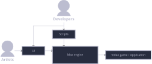

Introduction
Welcome to the Max developer guide! You can read it in a linear fashion or use it as a quick reference. You can use the left sidebar menu to navigate the different pages or the search button if you're looking for anything specific.
This documentation is maintained by us, so if anything is out of date let us know! You can click on the suggest an edit button on the top right corner to open an issue on GitHub. Alternatively, you can tell us directly.
Note: If you're looking for the API reference, click here:
TODO API DOCS LINK
Setting up
The first step into contributing to Max is to set up your development environment to work on Max. This section goes over installing the required packages, getting the repository and building it.
Getting started
Getting Max
In order to get a copy of Max on your computer, you need to have git configured.
Note: Your GitHub account needs to be added as a developer of Max in order for you to be able to pull the repository.
Setting up git
If you don't have git installed, use your package manager to install it.
- Debian, Ubuntu, Pop!OS:
sudo apt install git openssh-server - Fedora, Nobara:
sudo dnf install git openssh-server - Arch, Manjaro, Endeavour:
sudo pacman -S git openssh
Getting SSH keys
In order to pull the Max repository from GitHub, you need to have SSH keys configured.
If your user does not have any keys set up, you'll need to create them.
To create a new SSH key, run ssh-keygen. The program will ask a bunch of
questions, you can leave all of them blank by pressing enter.
This will generate an ssh key pair found at ~/.ssh/.
Configuring GitHub to recognize your SSH keys
In order for GitHub to recognize your ssh keys as yours, you need to add them to your account. To do so, log into github.com and open the following link: https://github.com/settings/keys
Alternatively, you can find the page through the GUI by navigating to
Profile picture>Settings>SSH and GPG keys
Now you can copy your public key. On a terminal, run cd ~/.ssh; ls. You should
see a file finishing in .pub like id_ed25519.pub or id_rsa.pub. Copy the
contents of this file by running cat <FILE_NAME>.pub and copying the output.
With the public ssh key on your clipboard, click on New SSH key on the GitHub
website and paste it on the Key text box. The title field will be
automatically populated once you press on Add SSH Key, so you don't need to
fill it.
Pulling the Max repository
On a directory of your choosing, you can run git clone git@github.com:GameDEV-UPC/max.git
to download the Max repository on your computer.
Setting up the tool-chain
In order to ensure a consistent development environment across machines, we use Nix. You can opt out of using Nix, in which case you can skip straight to setting up the formatter for your editor. Note that you will not receive support if Max is not building correctly for you.
Installing and configuring Nix
You can find the Nix installation instructions here: https://nixos.org/download/.
Once Nix is installed, you need to configure it to enable flakes. You can do so by running the following command:
echo "experimental-features = nix-command flakes" > ~/.config/nix/nix.conf
Installing and configuring direnv
In order to automatically load the development environment once you open the Max directory, you can install direnv on your system.
Follow the installation instructions at https://direnv.net/#getting-started.
Direnv doesn't load flakes by default, but you can enable it with an extension. To install the extension, follow these steps:
-
If it doesn't exist, create a configuration directory for direnv:
mkdir ~/.config/direnv -
Change directory into the direnv configuration directory:
cd ~/.config/direnv -
Clone the extension's repository:
git clone https://github.com/nix-community/nix-direnv -
Add the following line to the
direnvrcfile:source $HOME/.config/direnv/nix-direnv/direnvrcIf it the direnvrc file doesn't exist, you can create it.
Trusting Max
Direnv doesn't load development environments unless you've told it you trust
them before. cd into the directory where you cloned Max and you'll see a
message on your terminal. You can run direnv allow to trust the repository.
Set up the formatter for your editor
Max strictly adheres to the style guide, so using a formatter is mandatory. The development environment provided by the Nix flake already includes the formatter, but you still have to integrate it with your text editor.
Neovim
Assuming you already have the nvim-lspconfig and ccls or clangd plugins
installed and configured as well as your leader key set up, you just need to
define the shortcut:
vim.keymap.set('n', '<leader>f', function()
vim.lsp.buf.format { async = true }
end, opts)
Zed
The zed editor integrates the formatter out of the box, the shortcut to activate it can be found on it's docs.
Visual Studio Code
There exists a Visual Studio Code extension that integrates the formatter provided by the Nix flake into the editor.
Other editors
If you use any other text editors let us know! We'll include the instructions here.
Building Max
To keep the development environment clean, builds are done on the build/
directory. It doesn't come included on the repository, so you can create it
with mkdir build. For the following build-related pages, it is assumed you're
on the build/ directory.
Debug build
A debug build allows you to use the debug macros.
To set up the build directory for a development build, run:
cmake -DMAX_DEBUG=ON ..
You can compile as usual (with make), but to speed up the compilation process,
you can split the compilation tasks across threads with the -j flag.
If your computer has 8 threads, the command would be: make -j8.
Note: The command
nprocoutputs your processor's thread count.
Release
Release builds don't contain any debug symbols and are more optimized, resulting in smaller, faster binaries. It is recommended that for distributing Max, it is built in release mode.
Linux
To set up the build directory for a release build, run:
cmake ..
To compile, run:
make
Windows
Contributing
Style guide
Formatter
Patterns
Smart pointers
Documentation
Git
Git basics
Branches
Passing review
Legal guidelines
Using libraries
Copying code
LLMs
Architecture
This following section goes over Max's architecture. But in order to understand Max's layout, we must first understand some key concepts.
What is a game engine?
A game engine is the tool that allows game developers and artists to design and create video games. Think of a game engine as a black box where the inputs are assets and scripts and the output is a video game or application.
 The image above shows the black box with its inputs and outputs. Notice how there's extra tooling like a user interface that's not necessarily attached to the main black box.
Components
Core
Ui
RenderManager
InputManager
PhysicsManager
SoundManager
ParticleManager
AssetManager
Debugging
Debug macros
As per the style guidelines, using
<iostream> on the Max codebase is forbidden. It is for this reason that Max
ships some debugging macros to print information to the terminal. They live
at the Debug.hpp file.
Note: Debug macros only display the messages on debug builds.
There are six debugging macros included with Max:
-
show(): Prints the message unconditionally in bright purple. This macro is used when you want to display some information ONLY during the development stage and plan to remove it later.// my_sum_function.cpp int sum(int lhs, int rhs) { show("The first number is ", lhs, "!"); return lhs + rhs; } int result = sum(2, 4); -
trace(): Used for maximum verbosity messages. Information that you generally wouldn't want to see, but that is useful to have if you're trying to determine the exact state of the engine.// RenderManager/shaders/DefaultShaderInv.cpp void DefaultShaderInv::initObject(RenderObject *renderObject) { glBindVertexArray(renderObject->getVAO()); trace("Bound VBO: ", renderObject->getVBO()[0]); glBindBuffer(GL_ARRAY_BUFFER, renderObject->getVBO()[0]); // ... } -
debug(): Used for medium verbosity messages. Information that lets you track the general state of Max, but not granular enough to tell exactly what it's currently doing.// InputManager/InputManager.cpp MXbool InputManager::isJoistickConnected() { MXbool connected = glfwJoystickPresent(GLFW_JOYSTICK_1) == GLFW_TRUE; if (connected) debug("Joystick connected."); return connected; } -
info(): Used for information you always want to have.// EngineLogic/MaxBuilder.cpp Max MaxBuilder::build() { // ... Input = new InputManager(); Camera *camera = new Camera(_screen_width, _screen_height); Render = new RenderManager(_screen_width, _screen_height, camera); Max max(_camera, _scene, _window); info("New Max instance created."); return max } -
warn(): Used to indicate something went wrong, but that it is not a critical issue and the engine can recover from it.// RenderManager/ModelLoader.cpp ModelObject *ModelLoader::create_model_object(std::string name, const MXchar *model_src) { Assimp::Importer importer; const aiScene *scene = importer.ReadFile( model_src, aiProcess_Triangulate | aiProcess_FlipUVs | aiProcess_PreTransformVertices | aiProcess_GenNormals); if (!scene || scene->mFlags & AI_SCENE_FLAGS_INCOMPLETE || !scene->mRootNode) { warn("File ", model_src, " does not contain a model!"); // ... } // ... } -
error(): Used for critical errors the engine cannot recover from, and most likely result in a crash.// EngineLogic/MaxBuilder.cpp Max MaxBuilder::build() { // ... if (!gladLoadGLLoader((GLADloadproc)glfwGetProcAddress)) { error("GLAD failed to initialize"); throw BuildExeption(Cause::Faliure, Item::Internal); } // ... }
As you will have noticed, their structure is: DEBUG_LEVEL [file_name:function_name:line_number] user message.
Besides show(), debug macro messages will not be displayed by default, even on
debug builds. They have to be enabled through the LOG_LEVEL environment
variable.
The levels correspond to the macro names, and are ordered from least
to most verbosity in the following list: ERROR < WARN < INFO < DEBUG < TRACE.
Enabling a debug level automatically enables all the previous ones on the list.
LOG_LEVEL=INFO ./my_max_game Will show ERROR, WARN and DEBUG messages.